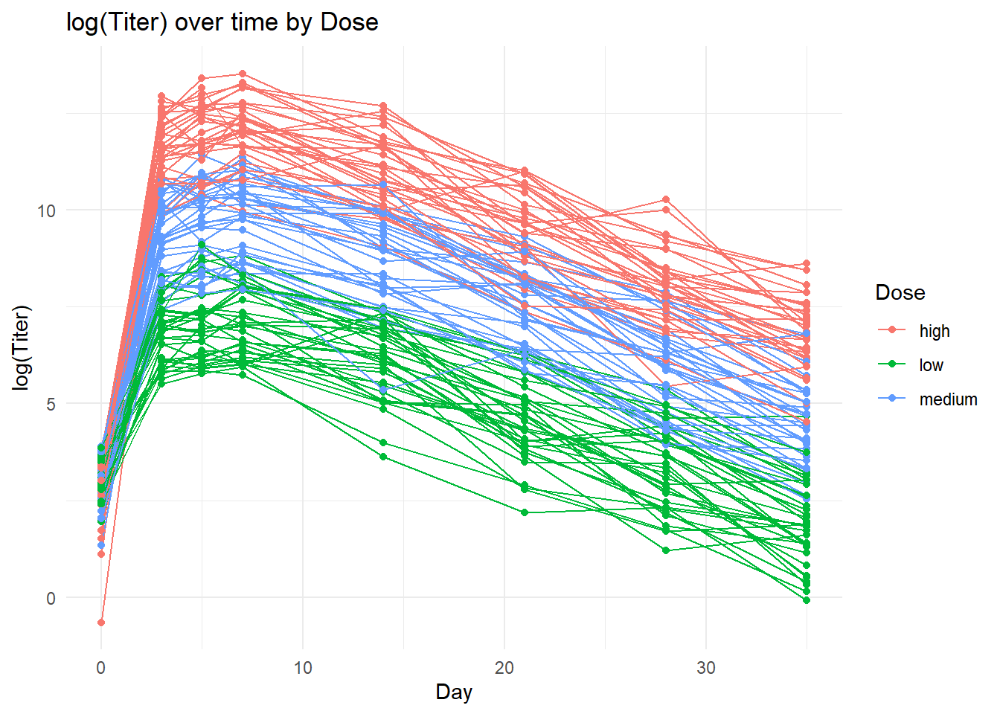
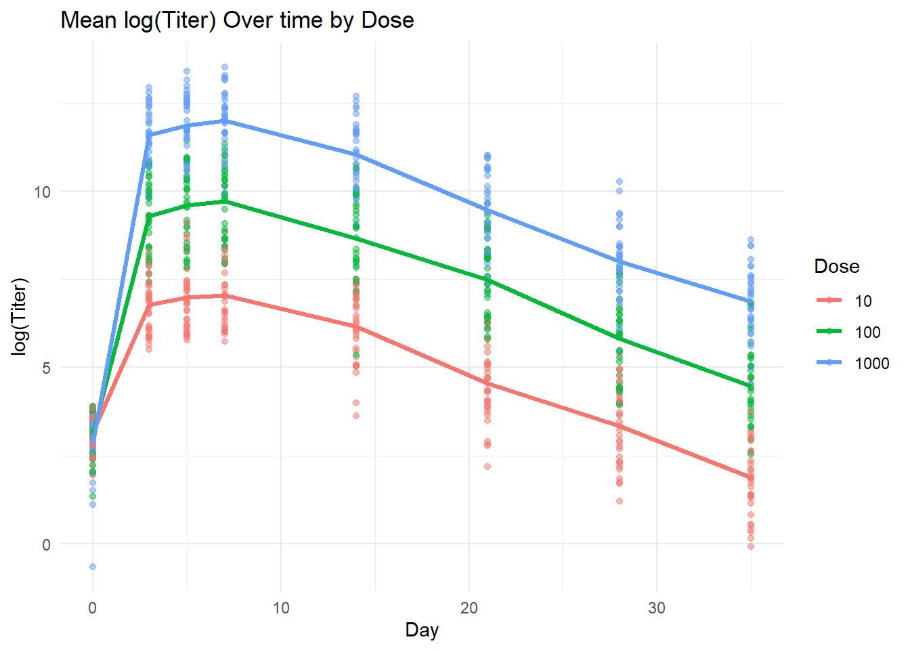
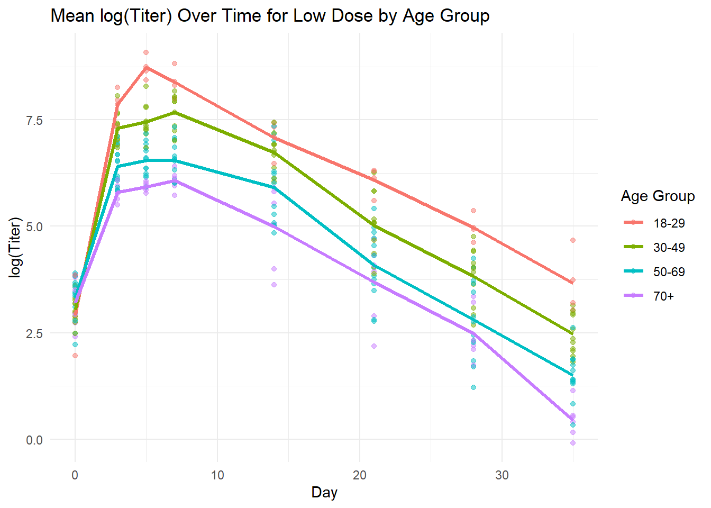
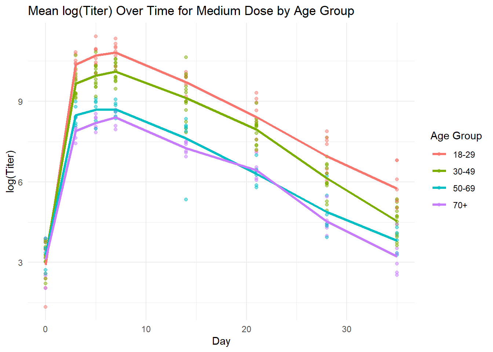
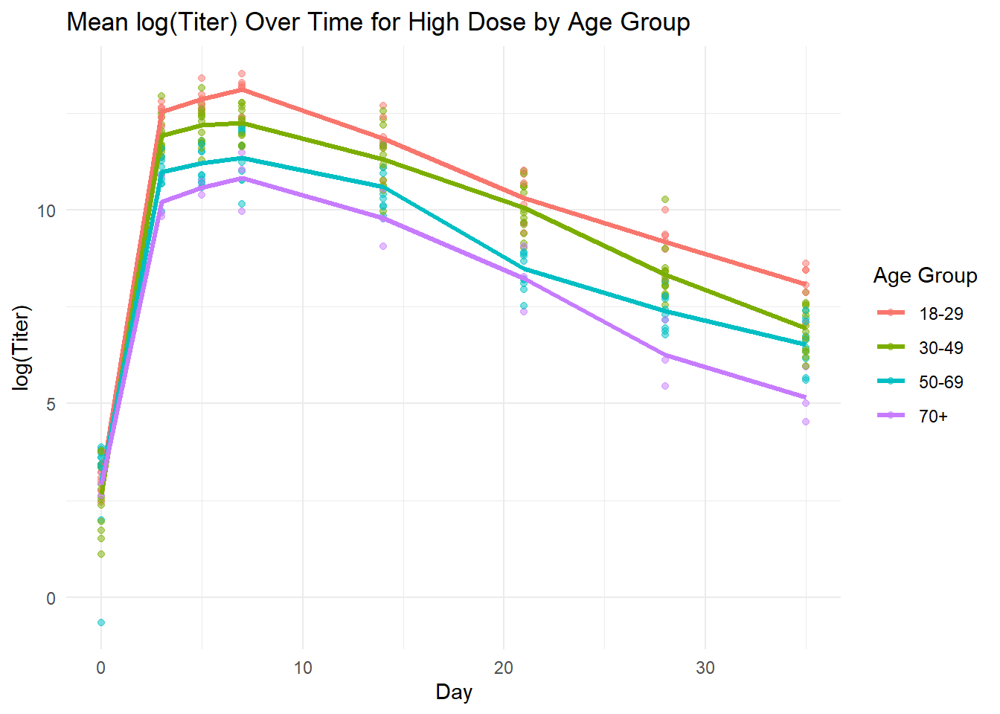

# load packages
library(dplyr)
Attaching package: 'dplyr'The following objects are masked from 'package:stats':
filter, lagThe following objects are masked from 'package:base':
intersect, setdiff, setequal, unionlibrary(ggplot2)Murphy John
For this exercise, I am going to simulate simple data from a (hypothetical) vaccine cohort of individuals who received various doses of a vaccine. Samples were collected and a specific antibody was measured on days 0, 3, 5, 7, 14, 21, 28, and 35. The following variables are to be included: id, age, dose, days, titer. Brief descriptions of the variables are as follows:
id is an identifier for each participantage is the participant’s age at day 0dose is the numerical dose of vaccine for which the individual received in micrograms (mcg) (10, 100, 1000)days represents the number of days since vaccination on which the sample was collectedtiter is the measured amount of antibody in the sampleThe simulation assumes the following:
# Set seed for reproducibility
set.seed(123)
# number of individuals
N <- 100
# assign random ages
ages <- sample(18:80, N, replace = TRUE)
# vaccine doses
dose <- c(10, 100, 1000)
# measurement times
days <- c(0, 3, 5, 7, 14, 21, 28, 35)
# assign doses
doses <- rep(dose, length.out = N)
# categorical dose variable
dose_cat <- if_else(
doses == 10, "low",
if_else(
doses == 100, "medium", "high"
)
)# generate baseline titers
baseline_titers <- runif(N, min = 0, max = 50)
# function to simulate titer with logistic growth and exponential decay
simulate_titer <- function(age, dose, days, baseline) {
boost_factor <- exp(-0.05 * (age - 18))
peak_titer <- dose * boost_factor * 1000 * rnorm(1, mean = 1, sd = 0.2)
growth_rate <- 0.3 * rnorm(1, mean = 1, sd = 0.01)
decay_rate <- 0.2 * rnorm(1, mean = 1, sd = 0.01)
peak_day <- 7 + rnorm(1, mean = 0, sd = 3)
# logistic growth until peak day, then exponential decay
titer <- ifelse(days == 0, baseline,
ifelse(days <= peak_day,
baseline + (peak_titer - baseline) / (1 + exp(-growth_rate * (days - peak_day / 2))),
pmax(peak_titer * exp(-decay_rate * (days - peak_day)), 0)))
return(titer)
}
# Generate dataset
vaccine_data <- expand.grid(ID = 1:N, days = days) %>%
mutate(
age = ages[ID],
dose = doses[ID],
dose_cat = dose_cat[ID],
baseline_titer = baseline_titers[ID],
titer = mapply(simulate_titer, age, dose, days, baseline_titer),
log_titer = log(titer)
) ID days age dose
Min. : 1.00 Min. : 0.00 Min. :20.00 Min. : 10.0
1st Qu.: 25.75 1st Qu.: 4.50 1st Qu.:32.00 1st Qu.: 10.0
Median : 50.50 Median :10.50 Median :46.50 Median : 100.0
Mean : 50.50 Mean :14.12 Mean :48.08 Mean : 366.4
3rd Qu.: 75.25 3rd Qu.:22.75 3rd Qu.:62.50 3rd Qu.:1000.0
Max. :100.00 Max. :35.00 Max. :80.00 Max. :1000.0
dose_cat baseline_titer titer log_titer
Length:800 Min. : 0.5234 Min. : 0.5 Min. :-0.6475
Class :character 1st Qu.:14.7232 1st Qu.: 83.2 1st Qu.: 4.4215
Mode :character Median :24.6535 Median : 1310.9 Median : 7.1784
Mean :25.5306 Mean : 31555.2 Mean : 7.1324
3rd Qu.:35.5683 3rd Qu.: 17484.5 3rd Qu.: 9.7691
Max. :49.2820 Max. :742461.5 Max. :13.5177 # plot days by titer stratified by dose
ggplot(vaccine_data) +
geom_line(aes(x = days, y = log_titer, color = dose_cat, group = ID)) +
geom_point(aes(x = days, y = log_titer, color = dose_cat)) +
labs(title = "log(Titer) over time by Dose",
x = "Day", y = "log(Titer)", color = "Dose") +
theme_minimal()
# calculate the mean titer for each dose and day combination
mean_titer_data <- vaccine_data %>%
group_by(dose, days) %>%
summarise(mean_log_titer = mean(log_titer), .groups = "drop")
# plot the individual points and mean curves by dose
ggplot(vaccine_data) +
geom_point(aes(x = days, y = log_titer, color = factor(dose)), alpha = 0.5) +
geom_line(data = mean_titer_data, aes(x = days, y = mean_log_titer, color = factor(dose)), size = 1.2) +
labs(title = "Mean log(Titer) Over time by Dose",
x = "Day", y = "log(Titer)", color = "Dose") +
theme_minimal()Warning: Using `size` aesthetic for lines was deprecated in ggplot2 3.4.0.
ℹ Please use `linewidth` instead.
Wile some overlap is apparent, dose seems to be a distinguishing factor of titer. This is good considering that a positive association between dose and titer was assummed. We also assumed that age was negatively associated with titer. Let’s explore this in the data.
# create age categories
vaccine_data2 <- vaccine_data %>%
mutate(age_group = case_when(
age < 30 ~ "18-29",
age < 50 ~ "30-49",
age < 70 ~ "50-69",
TRUE ~ "70+"
))
mean_titer_age <- vaccine_data2 %>%
group_by(dose, days, age_group) %>%
summarise(mean_log_titer = mean(log_titer), .groups = "drop")
# plot low dose by age group
ggplot(subset(vaccine_data2, dose == 10)) + # Filter data for low dose
geom_point(aes(x = days, y = log_titer, color = age_group), alpha = 0.5) +
geom_line(data = subset(mean_titer_age, dose == 10),
aes(x = days, y = mean_log_titer, color = age_group, group = age_group), size = 1.2) +
labs(title = "Mean log(Titer) Over Time for Low Dose by Age Group",
x = "Day", y = "log(Titer)", color = "Age Group") +
theme_minimal()
# plot medium dose by age group
ggplot(subset(vaccine_data2, dose == 100)) + # Filter data for low dose
geom_point(aes(x = days, y = log_titer, color = age_group), alpha = 0.5) +
geom_line(data = subset(mean_titer_age, dose == 100),
aes(x = days, y = mean_log_titer, color = age_group, group = age_group), size = 1.2) +
labs(title = "Mean log(Titer) Over Time for Medium Dose by Age Group",
x = "Day", y = "log(Titer)", color = "Age Group") +
theme_minimal()
# plot high dose by age group
ggplot(subset(vaccine_data2, dose == 1000)) + # Filter data for low dose
geom_point(aes(x = days, y = log_titer, color = age_group), alpha = 0.5) +
geom_line(data = subset(mean_titer_age, dose == 1000),
aes(x = days, y = mean_log_titer, color = age_group, group = age_group), size = 1.2) +
labs(title = "Mean log(Titer) Over Time for High Dose by Age Group",
x = "Day", y = "log(Titer)", color = "Age Group") +
theme_minimal()
The age differences that we specified when simulating the data are certainly present in our final dataset.
This simulation was inspired by real data but certainly simplified for the purpose of this exercise. In the future, one could consider additional covariates, such as repeat vaccination status, prior infections, and additional comorbidities, all of which are known to be associated with immune response to vaccination.